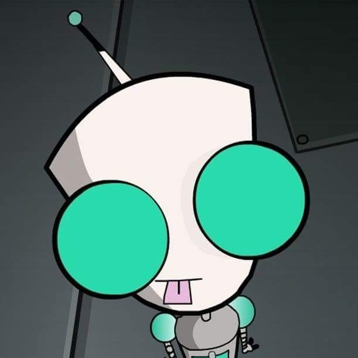

Antonio Saqueton

Remote Professional with over 15 years of experience across various
organizational domains.
About Me |
Get In Touch
Summary
Bringing a high level of problem-solving and precision to your
organization.
With over 15 years of work experience in the BPO and the remote staffing
industry, I have worked extensively with internal teams, customers and
stakeholders to recognize, strategize, and achieve their business goals.
Armed with a wealth of experience, I am pursuing a more targeted approach
- by applying my skills and expertise in the tech industry.
I am creating this GitHub page to validate my ability to structure and
rapidly implement learnings that are essential when starting out a career
in tech.
I understand that as a late adopter I am putting myself in a precarious
position by investing time and energy in a new domain. However, I am
undeterred - I am confident that the results will speak for itself.
Education
University of St. La Salle
Bachelor of Science Major in Computer Science
Work Experience
Go2
People and Project Management | July 2016 - Present
-
Responsible for managing people and projects across various departments.
Fountain Property Group
Personal Virtual Assistant | September 2013 - December 2015
- Responsible for managing the client's social media profiles,
-
Planning and executing marketing strategies to increase their online
network,
- Other administrative duties.
Convergys, Time Warner Cable
Technical Support and Sales Representative | July 2010 - August 2013
-
Responsible for providing real-time resolution of technical issues with
Time Warner Cable products and services,
-
Identifying and closing service upsell opportunities to customers.
Teleperformance, DELL
Supervisor | December 2009 - June 2010
-
Responsible for managing a team of Level 1 Technical Support
Representatives,
- Direct point of contact between frontline team with Operations,
-
Accountable for ensuring that the team meets the company's QA and CSAT
targets.
Teleperformance, DELL
Technical Support Representative, Level 2 | March 2008 - December 2009
-
Responsible for training Level 1 Technical Support Reps for program
launch on new site,
- Resolving technical issues escalated from Level 1.
Teleperformance, DELL
Technical Support Representative, Level 1 | September 2006 - March 2008
-
Responsible for providing customers a high level of customer
satisfaction by promptly resolving technical issues with their Dell
products.
Dunkin' Donuts
Service Crew | June 2006 - September 2006
- Responsible for providing courteous service to patrons,
- Operating store equipment to process orders,
-
Ensuring that the store has enough ingredients and non-food stock for an
efficient day-to-day operations.
Skills
Soft Skills
Proficient in oral and written English, high level of problem solving and
resolution mapping, high level of organizational skills - such as creating
and updating process documentation, high level of empathic skills -
motivating teams and conflict resolution.
Technical Skills
Customer Service, Administrative, Graphic Design, Web Design, Search
Engine Optimization, Digital Marketing, Sales, Recruitment, Operations
Management, Human Resources and People Management, Project Management.